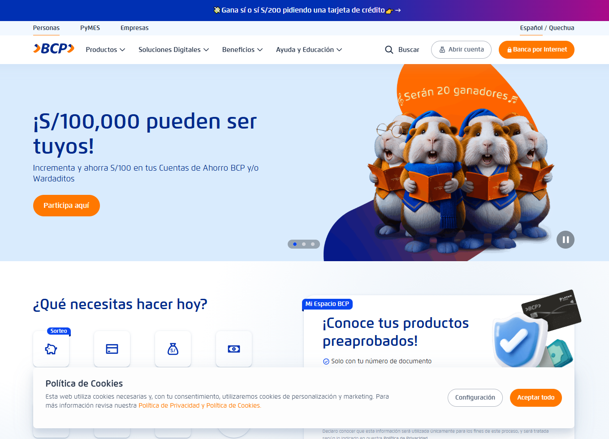
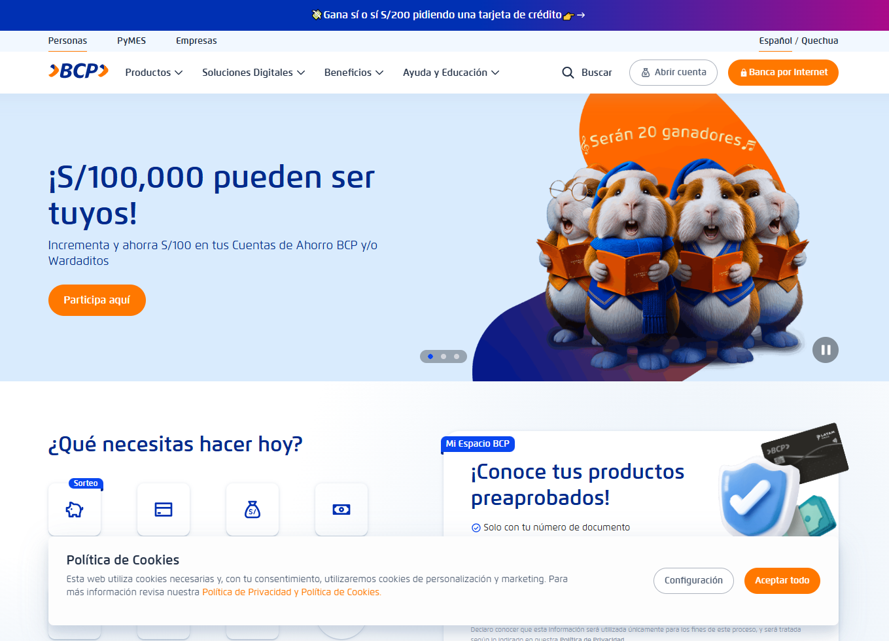

Plataforma PyME – BCP

Contexto
El Banco de Crédito del Perú (BCP), a través de su tribu PyME, necesitaba modernizar y optimizar sus procesos de atención y evaluación financiera para pequeñas y medianas empresas. La plataforma existente presentaba limitaciones en escalabilidad, integración y trazabilidad de los datos, dificultando el manejo de grandes volúmenes de solicitudes y el análisis en tiempo real.
Además, la solución debía integrarse con diversos servicios internos del banco y aprovechar los recursos cloud disponibles en Microsoft Azure, manteniendo altos estándares de seguridad, auditoría y disponibilidad.
Solución Implementada
Participé en el desarrollo de una plataforma moderna basada en microservicios desacoplados, construidos en Java 17 + Spring Boot, con despliegue automatizado y servicios distribuidos en Azure. La solución permitió mejorar el flujo de evaluación PyME, integrando fuentes de datos internas y externas.
Las funcionalidades clave implementadas incluyen:
- Diseño y desarrollo de microservicios robustos orientados a dominio.
- Integración con Azure Functions para procesamiento asíncrono.
- Ingesta estructurada de información a Azure Data Lake.
- Exposición segura de APIs mediante Azure API Management (APIM).
- Monitoreo avanzado y telemetría con herramientas internas del banco.
- Implementación de pipelines CI/CD con despliegues automatizados.
Tecnologías Utilizadas
- Java 17, Spring Boot (REST, WebFlux, Spring Security)
- Azure Functions y Serverless Computing
- Azure API Management (APIM)
- Azure Data Lake & Data Factory
- Azure DevOps (Repos, Pipelines, Boards)
- Kafka para mensajería distribuida
- MongoDB & SQL Server
- Patrones: Hexagonal, Clean Architecture, DDD aplicado
Resultados Clave
La nueva plataforma permitió al BCP mejorar significativamente la eficiencia en el procesamiento de solicitudes PyME, logrando:
- Reducción del tiempo de respuesta en más de 45%.
- Mejor trazabilidad y auditoría de cada flujo de negocio.
- Incremento en la disponibilidad y resiliencia del sistema.
- Mayor velocidad para integrar nuevos servicios y funcionalidades.
- Escalabilidad horizontal mediante microservicios desacoplados.
Mockups del Proyecto
Puedes incluir capturas del dashboard, flujos o interfaces internas (siempre sin información sensible).
 
